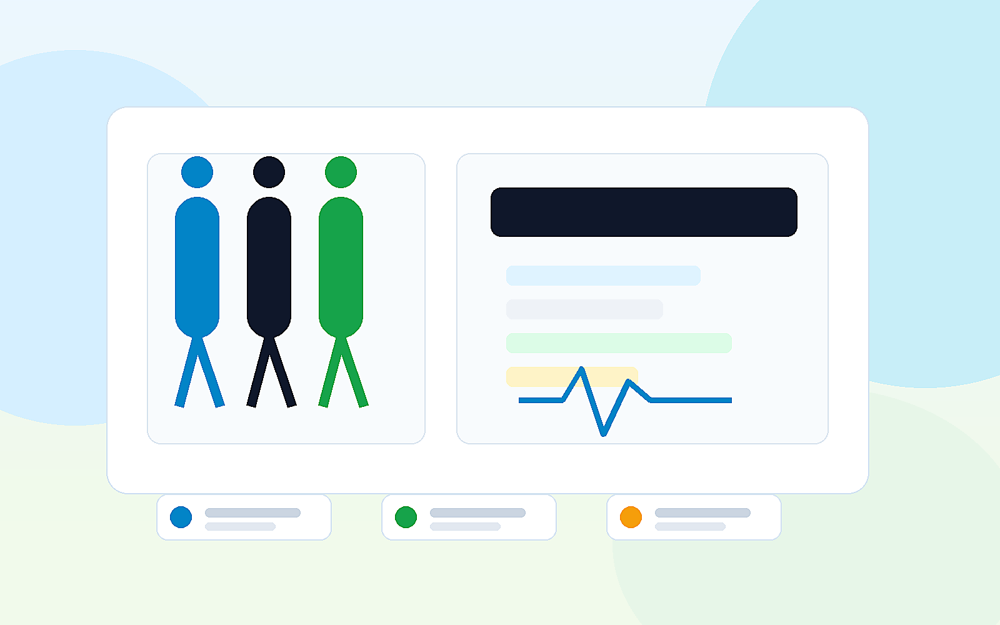
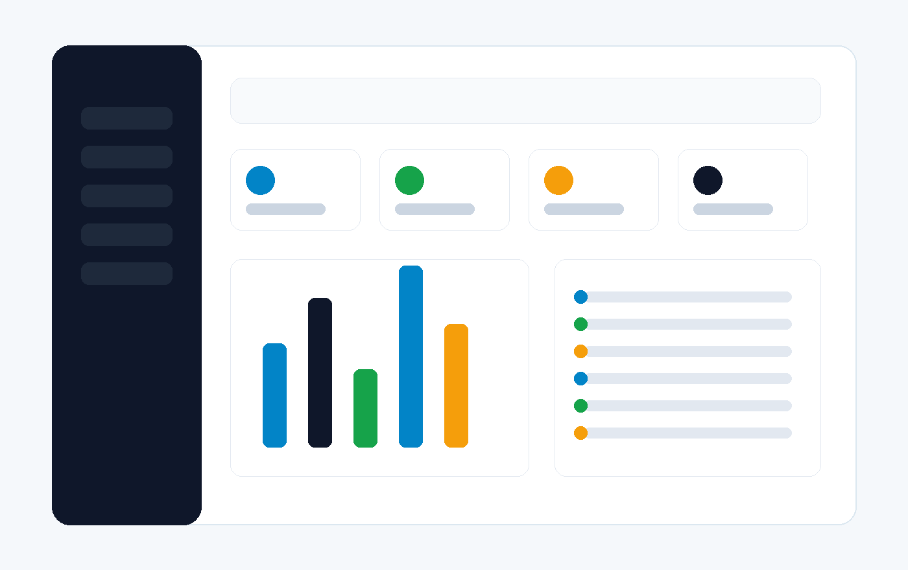

Matrículas abertas
Saúde Tá On
Aulas gratuitas 0800, aulões, funcional, aeróbica e zumba para quem quer cuidar da saúde junto com a Família Tá On.

Cadastro inicial
preencha seus dados e a coordenação entra em contato pelo WhatsApp
Sobre nós
Um projeto vivo, feito de rotina, cuidado, energia e presença.
Missão
Promover qualidade de vida com aulas gratuitas e atividades que aproximam saúde, bem-estar, corpo e mente.
Movimento
Ginástica funcional, aeróbica, zumba, pilates, ritbox e circuitos funcionais em formato de aulas e aulões.
Comunidade
A Família Tá On aparece nas aulas, homenagens, aniversários, eventos e na hashtag #semprepresente.
Cursos e atividades
Modalidades que traduzem a energia do Saúde Tá On.
Os horários e locais podem ser ajustados pela Fernanda quando a agenda oficial for confirmada.
Matrícula online
Um link simples para divulgar e receber as inscrições.
A primeira etapa coleta apenas os dados essenciais citados no pedido: nome, telefone, endereço e data de nascimento.
- Cadastro rápido para as alunas
- Contato posterior pelo WhatsApp
- Sem pedir documento antes da necessidade real
- Confirmação com número de protocolo
Contato
Atendimento direto para tirar dúvidas e confirmar informações.
Painel administrativo
Olá, Fernanda. Suas matrículas estão organizadas.
Visão rápida de inscrições, turmas, ocupação e pendências do projeto Saúde Tá On.

Gestão de alunos
Lista de matrículas
| Nome | Telefone | Data Nasc. | Turma | Status | Ações |
|---|
Gestão de turmas
Vagas, horários e inscrições
Relatórios
Alunos por turma
Faixa etária
Distribuição dos alunos
Configurações
Informações da instituição
Campos demonstrativos para mostrar onde entrariam logo, usuários administradores e dados oficiais.